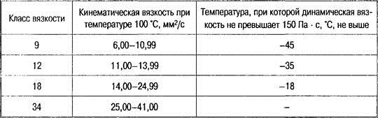
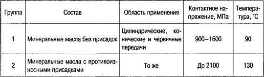
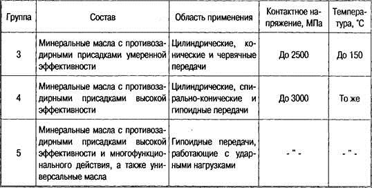
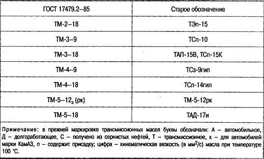
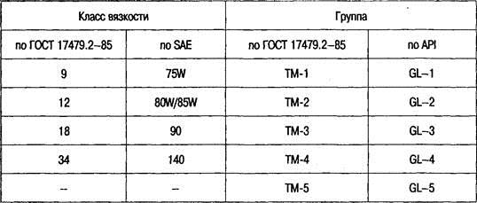
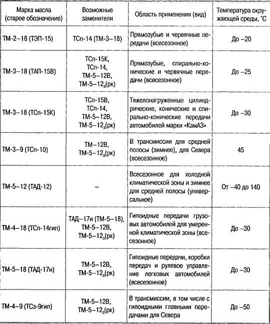
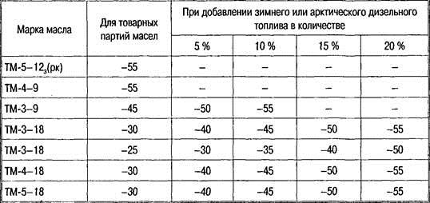
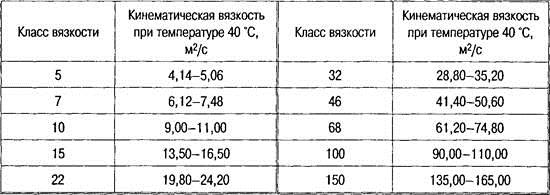
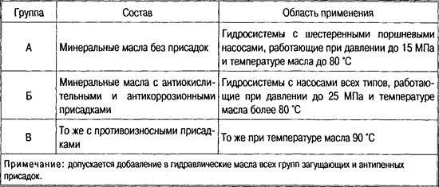
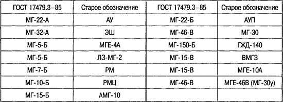

Тема 8.2
Классификация масел
Трансмиссионные и
гидравлические масла
Условия
работы трансмиссионных масел
Условия
работы трансмиссионных масел отличаются от моторных следующим:
—
зубчатые передачи работают в условиях граничного трения;
—
они должны сохранять работоспособность при температурах от —50 до 50 °С;
—
их время работы продолжительнее;
—
они должны снижать вибрацию и уровень шума.
Зубчатые
передачи работают с высокими удельными давлениями в местах контактов зубьев
(600—1200 МПа, а в гипоидных до 4000 МПа), большими скоростями скольжения
трущихся поверхностей (3—10 м/с, в гипоидных и червячных редукторах — до 20
м/с) и высокими, порядка 300—800 °С, температурами в точках контакта зубчатых
колес. Температура масла в агрегатах трансмиссии достигает 120—150 °С. В этих
условиях и наблюдается наиболее часто режим граничного трения. Поэтому
трансмиссионные масла должны обладать высокими противоизносными и
противозадирными свойствами, поэтому они содержат значительное количество
природных поверхностно-активных смолистых веществ и специальные противоизносные
и противозадирные присадки.
Нижний
температурный предел применения трансмиссионных масел обеспечивает трогание
машины с места и последующий переход на повышенные передачи без
предварительного разогрева масла в агрегатах. Летом в жару температура в
картерах трансмиссии достигает максимальных значений, что предопределяет выбор
минимально допустимой вязкости масла, не вызывающей его утечек через
неплотности.
Кроме
того, трансмиссионные масла должны обладать хорошими антикоррозионными
свойствами и образовывать минимальное количество пены, что решается подбором
соответствующей масляной основы и добавкой комплекса присадок.
Классификация
трансмиссионных масел и их обозначение
Согласно
ГОСТ 17479.2—85, трансмиссионные масла делятся на классы по вязкости (табл. 1),
а в зависимости от эксплуатационных свойств подразделяются на пять групп,
определяющих область их применения (табл. 2).
Таблица
1. Классы вязкости трансмиссионных масел

Таблица
2. Группы трансмиссионных масел по эксплуатационным свойствам и области их
применения


Маркировка
трансмиссионных масел: ТМ — трансмиссионное масло; первая цифра — группа масла
(уровень качества масла); второе число — класс вязкости.
В
нормативно-технической документации встречаются устаревшие обозначения, поэтому
в табл. 3 приводится их соответствие с
обозначениями по ГОСТ 17479.2—85.
Таблица
3. Соответствие устаревших обозначений трансмиссионных масел и обозначений по
ГОСТ 17479.2—85

В
табл. 4 приведены соответствия классов вязкости и групп трансмиссионных масел
по ГОСТ 17479.2—85 и по SAE и API.
Трансмиссионные
масла имеют следующие классы вязкости: 75W, 80W, 85W — зимние, 90 и 140 —
летние, 80W-90, 85W-95 и 85W-140 — всесезонные.
Таблица
4. Соответствие классов вязкости и групп трансмиссионных масел по ГОСТ
17479.2—85 и по SAE и API

Встречающееся
масло GL—6 по API соответствует GL—5, но более долговечное с повышенными
противокоррозионными свойствами.
Масло
марки ТАД-17и соответствует SAE 85W-90 по SAE или GL—5 по API.
Перспективными
являются синтетические трансмиссионные масла с вязкостью SAE 75W-90 и уровнем
качества API GL—5 (ТМ-5). Такие масла предпочтительнее для зимних условий, так
как они загустевают при более низких температурах, чем минеральные. Также как и
моторные масла, синтетические трансмиссионные масла характеризуются пологой
вязкостно-температурной кривой. Для получения таких масел используют
синтетические углеводородные масла, сложные эфиры многоатомных спиртов, сложные
эфиры карбоновых кислот, полисилоксановые жидкости и другие
высокотехнологические компоненты. Обычно синтетическое масло имеет вязкость 7,1
мм2/с при температуре 100 °С, 22 Па*с при температуре —40 °С, а
также температуру вспышки 230 °С, температуру застывания —57 °С.
Синтетического
масла может хватить на весь срок службы автомобиля при условии отсутствия
подтеканий через неплотности. Сдерживающим фактором широкого применения
синтетических масел является их высокая стоимость.
В
табл. 5 приведены рекомендации по применению трансмиссионных масел в
зависимости от их назначения и температуры окружающей среды, а в табл. 6 даны рекомендации по применению
трансмиссионных масел с учетом предельно низких температур эксплуатации.
Таблица
5. Рекомендации по применению трансмиссионных масел

Таблица
6. Значения температур окружающей среды, при которых возможно трогание машины с
места, °С, не ниже

Условия
работы и требования к гидравлическим маслам
Гидравлические
масла используются в гидравлических приводах систем управления, в подъемных
устройствах автомобилей-самосвалов и дополнительного оборудования.
Являясь
рабочим элементом в гидравлических приводах, они также предохраняют трущиеся
детали от износа, отводят избыточное тепло, и удаляют продукты износа и
загрязнения.
При
работе гидравлические масла подвергаются большому перепаду температур — от
минус 30 до плюс 80 °С; давление в системе составляет 10—15 МПа; скорость
скольжения до 20 м/с; имеет место постоянный контакт с черными и цветными
металлами, уплотнениями и шлангами при высоких давлениях и температурах.
Поэтому к гидравлическим маслам предъявляются следующие эксплуатационные
требования:
—
хорошие вязкостно-температурные свойства (при максимальной температуре
вязкость должна быть не ниже 7 мм2/с, а при минимальной — не ниже
1000 мм2/с);
—
низкая температура застывания;
—
хорошие смазывающие свойства, не вызывающие коррозии и не разрушающие
резиновых изделий;
—
стабильность при хранении и использовании;
—
хорошие антипенные свойства;
—
низкая пожароопасность;
—
недефицитность.
Чаще
всего для заполнения гидросистем в качестве жидкости используются маловязкие
нефтяные масла или их смеси. Иногда добавляются вязкостные, противоизносные и
антиокислительные присадки.
Классификация
гидравлических масел и их обозначение
По
кинематической вязкости гидравлические масла делят на десять классов (табл. 7),
а по эксплуатационным свойствам — на три группы (табл. 8).
Обозначение
гидравлических масел состоит из трех групп знаков: букв «МГ» (минеральное
гидравлическое); цифр, обозначающих класс кинематической вязкости; буквы,
указывающей на принадлежность масла к группе по эксплуатационным свойствам.
Таблица
7. Классы вязкости гидравлических масел

Таблица
8. Группы гидравлических масел по эксплуатационным свойствам

Пример
обозначения гидравлического масла МГ-15-В: МГ обозначает масло гидравлическое;
15 — класс вязкости; В — группа по эксплуатационным свойствам.
Отечественная
классификация гидравлических масел по группам в зависимости от эксплуатационных
свойств имеет зарубежные аналоги.
Группа
масла:
по
ГОСТ 17479-85 .... А Б В
по
ISO 6074/4 1982/Е .... НН Н НМ
В
технической литературе часто встречается устаревшая классификация
гидравлических масел. В табл. 9 представлено соответствие обозначений
гидравлических масел современной классификации по ГОСТ 17479.3—85 и принятой
ранее.
Таблица
9. Соответствие обозначений гидравлических масел по ГОСТ 17479.3—85 принятым
ранее
Контрольные
вопросы
1.
Расскажите об условиях работы трансмиссионных масел.
2.
Какие требования предъявляются к трансмиссионным маслам?
3.
Как классифицируются трансмиссионные масла?
4.
Расскажите об условиях работы гидравлических масел.
5.
Какие требования предъявляются к гидравлическим маслам?
6.
Расскажите о классификации гидравлических масел.
Р.S.
Чтобы правильно
выбрать масло для конкретного двигателя, нужно учитывать ряд факторов
1.
Требования производителя автомобиля изложенные в инструкции по эксплуатации
(сервисной книжке).
Конструкция
двигателей может сильно отличаться друг от друга. При разработке новых моторов
конструкторы ориентируются на определенную вязкость масла. Поэтому у разных
моделей – разная мощность маслонаососов, диаметр пропускных каналов, размер
хонинговки, разные параметры по отводу тепла. Поэтому прежде чем покупать
моторное масла, загляните в инструкцию по эксплуатации, в крайнем случае
воспользуйтесь одним из поборников масла на сайте Шелл, Мобил, Кастрол и т.д.
Все они подбирают масло по системе Олислагер, где забиты требования
автопроизводителей и подбор масел идет по ним.
2.
Климатические условия эксплуатации автомобиля.
Все
довольно просто, чем холоднее температура окружающей среды, тем меньше должен
быть класс вязкости моторного масла (число стоящее после букв SAE):

Рисунок 1 Приблизительные температурные пределы использования масел
различных классов по SAE
3.
Срок эксплуатации и текущее состояние двигателя.
При
длительном сроке эксплуатации автомобиля зазоры в парах трения двигателя
значительно увеличиваются, что требует применения более вязкого масла для
обеспечения удовлетворительного давления в смазочной системе. Это особенно
важно в летнее время, когда двигатель автомобиля может нагреваться до максимальных
температур.
Для
старых изношенных двигателей, ресурс которых подходит к концу,
рекомендуют использовать моторные масла, класс которого выше чем указаны
сервисной книжке. Этом могут быть классы SAE 15W-40, SAE 20W-40, для совсем
старых двигателей лучше остановиться на классах: SAE 15W-50, SAE 20W-50.
Внимание, заливая масло повышенного класса обращайте внимание на температуру.
Вязкое масло при крепком морозе – может стать не лекарством, а ядом которое
убьет двигатель.
Довольно
редко, в основном у японских автомобилей вам может встретиться
спецификации Global DHD и ILSAC. Создание
этих спецификации было попыткой объединить требования API и ACEA с
требованиями японских автопроизводителей. Впрочем особого развития эта идея не
получила и вторая версия так и не появилась. Для японских и корейских
мотоциклов двольно распространена спецификация JASO. Для
2-тактных двигателей (FA , FB, FC, FD по мере возрастания свойств, а для
четрехтактных MA и MB). Для двигателей гидроциклов и снегоходов –
ориентируйтесь на спецификацию NMMA.
Существует
несколько видов смазочных материалов, которые различаются не только по своему
химическому составу, но также по степени вязкости и по условиям применения.
|
Маркировка масла |
Температура окружающей среды в 0С |
Сезонность |
|
SAE 0W |
От -40 до -10 |
Зима |
|
SAE 5W |
От -35 до -10 |
Зима |
|
SAE 10W |
От -25 до -5 |
Зима |
|
SAE 15W |
От -20 до 0 |
Зима |
|
SAE 20W |
От -15до +15 |
Зима |
|
SAE 30 |
От +5 до +30 |
Лето |
|
SAE 40 |
От +5 до +45 |
Лето |
|
SAE 50 |
От +10 до +50 |
Лето |
|
SAE 5W-40 |
От -30 до +35 |
Всесезонность |
|
SAE 5W-30 |
От -35 до +30 |
Всесезонность |
|
SAE 10W-30 |
От -25 до +30 |
Всесезонность |
|
SAE 10W-40 |
От -25 до +40 |
Всесезонность |
|
SAE 15W-40 |
От -20 до +45 |
Всесезонность |
|
SAE 20W-50 |
От -15 до +50 |
Всесезонность |